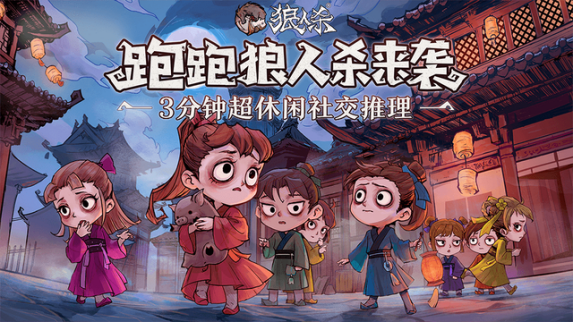
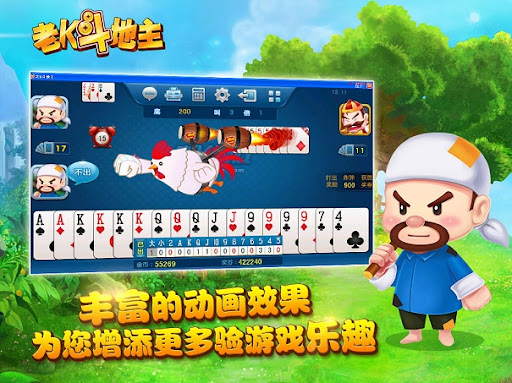
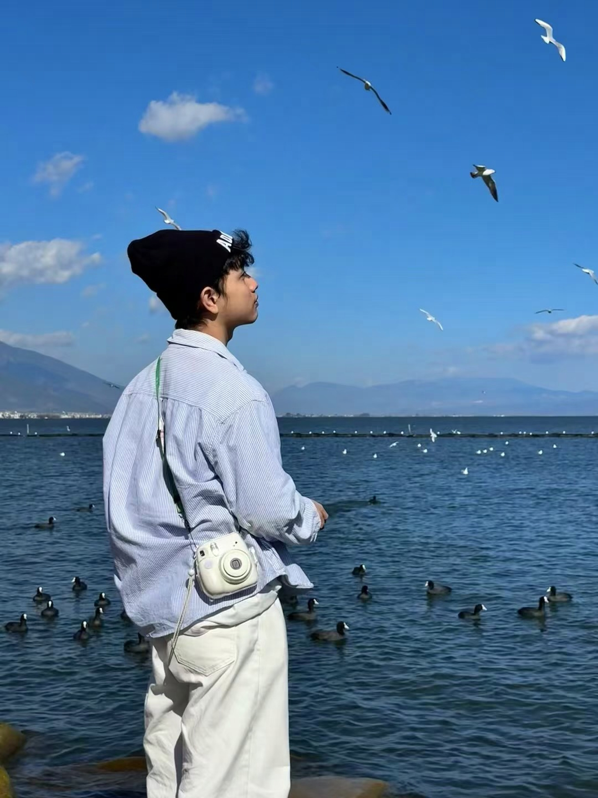

Games I've Worked On

跑跑狼人杀

Dead by Daylight Mobile


我是一名长期从事游戏服务端开发的工程师，5 年游戏后端开发经验，聚焦服务端从 0 到 1 搭建、Kubernetes 与云基础设施、架构优化、成本优化、实时通信与分布式系统。
近年的工作重点集中在服务端系统建设、Kubernetes 集群、CI/CD、云平台、多云迁移、数据库迁移、战斗服托管平台以及实时通信系统。我希望打造的不只是稳定可运行的服务端系统，也包括更高效的研发流程、更低的服务成本，以及更可持续演进的服务架构。
当前任职于网易互娱，此前也经历过游戏服务端业务开发与 Windows 软件开发阶段，逐步形成了从业务研发到平台建设、从上线运维到长期架构演进的完整能力。
View ResumeC / Golang / TypeScript / Lua / Python
Kubernetes / Docker / Linux / CI/CD / Monitoring
AWS / Aliyun / GCP
游戏服务端开发 / 服务端从 0 到 1 搭建 / 分布式系统 / 高并发系统 / 实时通信系统 / 架构优化 / 成本优化 / 数据迁移与数据库同步
5 年游戏后端开发经验，覆盖开发、上线、运维与长期演进。
有服务端从 0 到 1 搭建与线上稳定性保障经验。
有 Kubernetes 集群建设、问题排查与 CI/CD 流程建设经验。
有战斗服托管平台设计推进、多云部署与云迁移经验。
有数据库迁移与异步同步链路建设经验。
有实时通信系统重构与长连接消息推送经验。
获得公司技术奖，做过降本、迁移与平台化方向核心项目。
持续承担负责人或主导者角色，推进方案落地与关键模块演进。


服务端开发工程师 · 2020.11 - 至今
TypeScript / Golang / Python / Lua / Kubernetes / Docker / Redis / AWS / Aliyun / GCP
负责服务端从 0 到 1 搭建、基础设施部署、Kubernetes 集群、CI/CD 流程、监控建设，以及服务端架构优化、成本优化、服务器性能优化、业务开发与日常维护。
服务端开发工程师 · 2019.04 - 2020.11
Lua / C / Python / Skynet / MySQL / Redis
主要负责服务端业务开发与维护，在项目实践中逐步进入游戏服务端职业方向，积累线上问题处理与业务迭代经验。
软件开发工程师 · 2018.01 - 2019.04
C / C++ / so / dll / MFC
主要负责动态库开发、Windows 软件与 OTX 空间开发，以及旧项目接口升级和维护，完成从桌面软件到服务端方向的职业过渡。
自研对标 AWS Gamelift 的战斗服托管平台。作为负责人，负责架构设计、工作分配、进度把控及核心模块维护迭代，支持多云部署与更快的激活、扩缩容能力，落地后帮助项目节省约 50% 战斗服成本，并获得公司技术奖。

主导服务器从 AWS 迁移至 GCP，负责技术调研、Kubernetes 集群搭建、迁移执行与流程规范制定，推动多云能力建设并降低后续基础设施切换成本。
主导数据库从 DynamoDB 迁移到 Mongo，负责全量同步、增量同步与数据校验能力建设，推进核心数据链路迁移落地，并为后续架构演进打下基础。
面向无状态服务器架构的异步数据库同步器。负责架构设计及核心实现，支撑玩家数据异步落地链路，配合新架构后帮助项目将数据库成本降低超过 80%，并获得公司技术奖。
负责服务端集群部署与维护、疑难问题处理、成本优化，以及服务端与客户端玩法开发。在长期 live service 场景下兼顾稳定性、交付效率与线上质量，也承担过服务端组长职责。
使用 Golang 独立重写实时通信服务器，支持长连接消息推送，并优化架构、消息队列与在线状态判断能力，强化非实时架构下的掉线与离线判断链路。